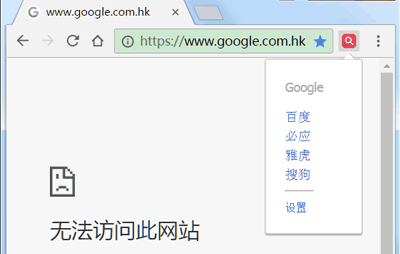

"搜索拐杖" 已安装 - 选项
搜索引擎快捷切换，关键词无需重输！
只显示我想切换的搜索：
Google
Rambler
(?)
基于Google技术提供搜索的网站，当Google无法访问时，可以用来代替Google。可设置英文界面，操作见：
基于Google的搜索引擎
百度
必应
搜狗
雅虎
360搜索
自定义搜索：
(?)
辅助小功能：
单击图标切换
切换后关闭弹窗
支持Google引用页重试直接访问
(?)
数据云同步：
备份数据自动同步

分享到
反馈建议：请到
介绍文章
或
项目页面
留言
KKKSou
出品，
蔓草札记
修改